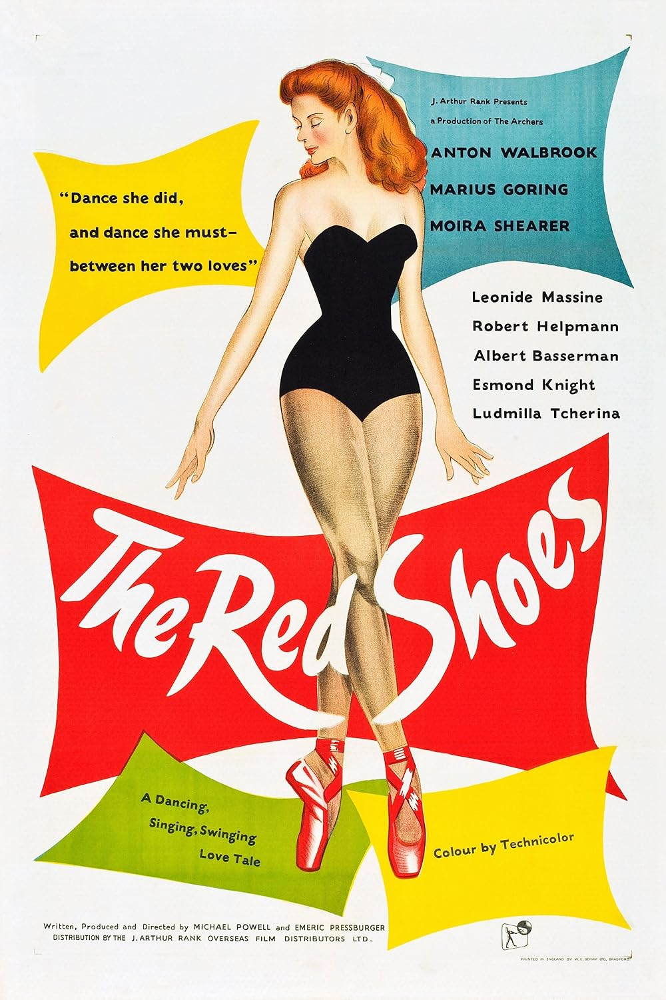

The Red Shoes
21st Academy Awards
(Oscars 1949)
5 Nominations, 2 Awards
| Nominations | ||
|---|---|---|
| Category | Nominees | Result |
| Best Motion Picture | J. Arthur Rank-Archers | Nominated |
| Writing (Motion Picture Story) | Emeric Pressburger | Nominated |
| Film Editing | Reginald Mills | Nominated |
| Art Direction (Color) | Arthur Lawson and Hein Heckroth | Won |
| Music (Music Score of a Dramatic or Comedy Picture) | Brian Easdale | Won |